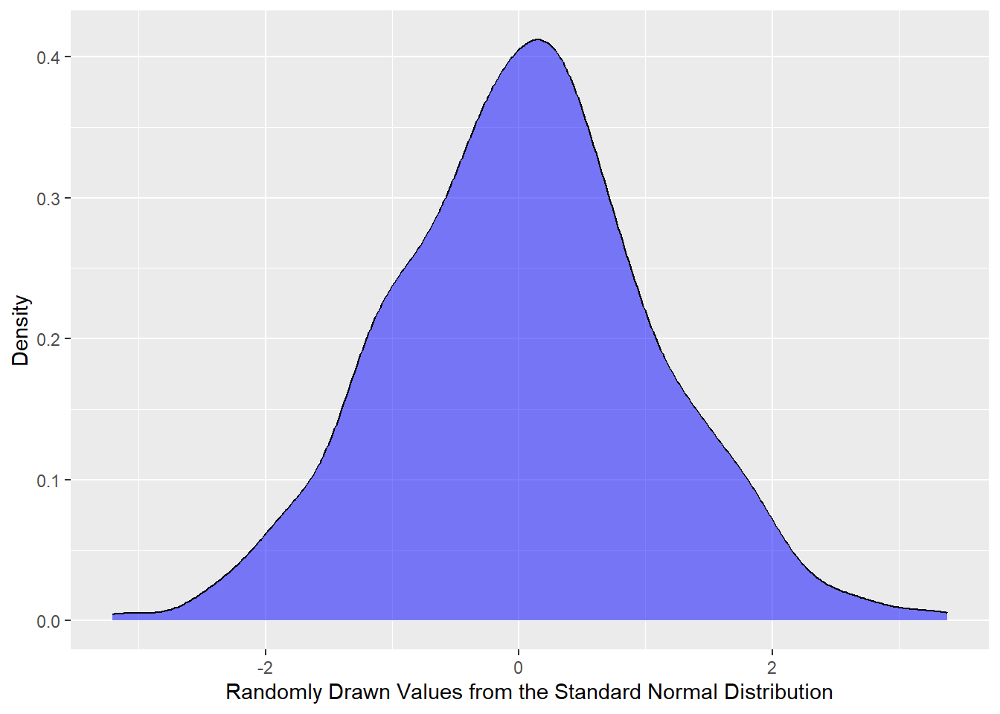

Basic Review
This page features review of basic statistical concepts and the linear algebra necessary for advanced statistics.
Basic Statistics
Discrete Random Variables
Probability Mass Function (pmf)
\(p(x) = P(X=x)\)
- \(p(x) \geq 0\)
- \(\sum_{x} p(x) = 1\)
Cumulative Distribution Function (cdf)
\(F(x) = P(X \leq x) = \sum_{k \leq x} p(k)\)
- \(0 \leq F(x) \leq 1\)
- If \(a \leq b \rightarrow F(a) \leq F(b)\)
Continuous Random Variables
Probability Density Function (pdf)
If X is a continuous random variable, then \(f(x)\) is a pdf if
- \(P(a \leq X \leq b) = \int_a^b f(x)dx\)
- \(f(x) \geq 0\)
- \(\int_{-\infty}^\infty f(x)dx = 1\)
Cumulative Distribution Function (cdf)
Properties of the CDF for a continuous RV X:
- \(P(X \leq x) = F(x)\)
- \(F(x) \geq 0\)
- \(\lim_{x \rightarrow \infty} F(x) = 1\)
- \(\lim_{x \rightarrow -\infty} F(x) = 0\)
PDF to CDF, and Back Again
By the fundamental theorem of calculus, if \(f(x)\) is the pdf of a continuous variable X, and \(F(x)\) is the cdf the continuous variable X, then:
- \(\frac{d}{dx}F(x) = f(x)\)
- \(F(x) = \int_{-\infty}^x f(t)dt\)
Conditional Probability
\(P(A \mid B) = \frac{P(A \cap B)}{P(B)}\)
\(\rightarrow P(B \mid A) = \frac{P(A \mid B)P(B)}{P(A)}\)
In the reference to the above formulas, the following definitions apply:
- \(P(B \mid A)\): Posterior Probability
- \(P(B)\): Prior Probability
- \(P(A)\): Evidence
Note that when dealing with more than two events, due to the law of total probability, the following is true:
\(P(A) = \sum_{i = 1}^{n} P(A \mid B_i)P(B_i)\)
In other words, this applies:
\(P(B \mid A) = \frac{P(A \mid B)P(B)}{P(A)} = \frac{P(A \mid B_j)P(B_j)}{\sum_{i = 1}^{n} P(A \mid B_i)P(B_i)}\)
Independence
Given the events \(A\) and \(B\), the events are considered independent if
\(P(A \cap B) = P(A)P(B)\).
This has implications to the conditional probability definitions above.
Expected Value
Expected value, also known as expectation, mean, or average has slightly different methods of being calculated depending on if the random variable is discrete or continuous.
Discrete
\(E[X] = \sum_{x}xp(x)\)
\(E[g(X)] = \sum_{x}g(x)p(x)\)
Continuous
\(E[X] = \int_{-\infty}^{\infty} xf(x)dx\)
\(E[g(X)] = \int_{-\infty}^{\infty} g(x)f(x)dx\)
Expectation is a Linear Function
\(E[aX + b] = aE[X] + b\)
Variance and Standard Deviation
Variance, which essentially describes the spread of the data, particularly in reference to the mean, also has slightly different methods of being calculated depending on if the random variable is discrete or continuous.
Discrete
\(Var(X) = E[(X - E[X])]^2 = E[X^2] - (E[X])^2\)
Continuous
Note: Notice from the formula above, all we really need to find are two different instances of expected value, namely
\(E[X^2]\) and \(E[X]\)
Standard Deviation
\(SD(X) = \sqrt{Var(X)}\)
Independence in Variance
If \(X\) and \(Y\) are independent, then
\(Var(X + Y) = Var(X) + Var(Y)\)
Percentiles & Quantiles
Percentiles
For a random variable \(X\), \(x_p\) is the \(p^{th}\) percentile of \(X\) if
\(P(X \leq x_p) = p\)
For example, the median is the \(50^{th}\) percentile.
Quantiles
We often say percentile when given a percentage. The quantile is essentially just the decimal version of the percentile.
For example, the median is the \(0.5\) quantile.
The quantile function is the inverse of the CDF:
\(Q(q) = x\) whenever \(P(X \leq x) = q\).
Symmetry
The normal distribution is symmetric around its mean \(\mu\). Hence, if we denote the normal distribution by \(f_X(x)\), then for any \(c\), \(f_X(\mu + c) = f_X(\mu - c)\).
This idea can be generalized for any distribution function. Suppose a distribution function, \(f(x)\), is symmetric around a point \(x_0\). Then for any \(c\), \(f(x_0 + c) = f(x_0 - c)\).
It can also be shown that if \(X\) is a continuous random variable whose ditribution is symmetric about \(x_0\), let’s use \(x_0 = 0\) for simplicity, then \(E[2^{2k+1}] = 0\), for any postive integer \(k\). That is, the expected value of any odd power of \(X\) is \(0\).
68-95-99.7 Rule
Given the random variable, \(X \sim N(0, 1)\), we’ll examine the outcomes of when \(X\) is within 1, 2, and 3 standard deviations of the mean. We’ll build off the ideas of symmetry with symmetric ranges.
Single Standard Deviation From the Range
\(P(|x - \mu| \leq \sigma)\)
\(= 2P(x - \mu \leq \sigma)\) (just to show symmetry)
OR
\(= P(-\sigma \leq x - \mu \leq \sigma) = P(-1 \leq \frac{x-\mu}{\sigma} \leq 1)\)
\(= P(-1 \leq Z \leq 1)\)
\(\Phi(1) - \Phi(-1)\)
NOTE: This does not depend on \(\mu\) or \(\sigma\).
The exact result of \(P(|x - \mu| \leq \sigma) \approx 0.68\)
Double Standard Deviation From the Range
\(P(|x - \mu| \leq 2\sigma) \approx 0.95\)
Triple Standard Deviation From the Range
\(P(|x - \mu| \leq 3\sigma) \approx 0.997\)
This means that 99.7% of values for any normal distributions are within 3 standard deviations of the mean.
This rule is ONLY for normal distributions, but we can extend to other distributions.
Markov’s Inequality
Given a random variable \(X\) such that \(x \geq 0\) (this can be any distribution), then
\(P(X \geq a) \leq \frac{E[X]}{a}\)
Chebyshev’s Inequality
Given a random variable \(X\) with finite variance, then
\(P(|X-\mu|\geq k\sigma) \leq \frac{1}{k^2}\)
This is saying that the probability of \(X\) being outside k standard deviations of mean is less than \(\frac{1}{k^2}.\)
NOTE: Different distributions (i.e. not normal distributions) are common in different domains. Markov’s and Chebyshev’s inequalities are great without knowing the exact distribution. In other words, they’re great for making general assumptions about general distributions.
Common Discrete Distributions
Binomial Distribution
If a success has probability p, and there are n trials, what is the probability we have k successes:
(Suppose a coin lands on heads with the probability p. If we flip the coin n times, what is the probability the coin lands on heads k times)
\(P(X=k) = \binom{n}{k}p^k(1-p)^{n-k}\)
- \(E[X] = np\)
- \(Var(X) = np(1-p)\)
Geometric Distribution
If a success has probability p, what si the probability we k failures before the first success?
\(P(X = k) = p(1-p)^k\)
- \(E[X] = \frac{1-p}{p}\)
- \(Var(X) = \frac{1-p}{p^2}\)
Deriving E[X]
\(E[X] = \sum_{k=0}^{\infty} kp(1-p)^k\)
\(= p(1-p)\sum_{k=1}^{\infty} kp(1-p)^{k-1}\)
Note that \(kp(1-p)^{k-1}\) is the definition of a derivative.
So, letting \(q = 1-p\), and using the fact that \(\sum \frac{d}{dx}f(x) = \frac{d}{dx}(\sum f(x))\),
\(E[X] = p(1-p)\sum_{k=0}^{\infty} (q^k)^{'} = p(1-p)(\sum_{k=0}^{\infty} q^k)^{'}\)
Note that \(\sum_{k=0}^{\infty} q^k = \frac{1}{1-q}\) for \(q \leq 1\)
\(= p(1-p)(\frac{1}{1-q})^{'}\)
\(= p(1-p)\frac{1}{(1-q)^2}\)
Substitute back \(q = 1-p\),
\(= \frac{p(1-p)}{p^2} = \frac{1-p}{p} = E[X]\)
Deriving Var(X)
\(Var(X) = E[X^2] - (E[X])^2\)
We know \(E[X]\), so we only need to solve for \(E[X^2]\).
\(E[X^2] = \sum_{k=0}^{\infty} k^2p(1-p)^k = \sum_{k=0}^{\infty} k(k-1+1)p(1-p)^k\)
\(= \sum_{k=0}^{\infty} k(k-1)p(1-p)^k + \sum_{k=0}^{\infty} kp(1-p)^k\)
\(= p(1-p)^2 \sum k(k-1)(1-p)^{k-2} + E[X]\)
Now just focusing on the left term, notice this is now the definition of a second derivative:
\(p(1-p)^2 \sum ((1-p)^k)^{''}\)
Poisson Distribution
Suppose we wanted to approximate the binomial distribution, \(P(X=k) = \binom{n}{k}p^k(1-p)^{n-k}\), to find what it calculates on average for large numbers.
Since \(E[X] = np\) (“on average”), let
\(\lambda = np\)
\(\rightarrow p = \frac{\lambda}{n}\)
Plugging the \(\lambda\) expression into the binomial distribution yields:
\(P(X=k) = \binom{n}{k}(\frac{\lambda}{n})^k(1-(\frac{\lambda}{n}))^{n-k}\)
Now that we have an equation in terms of \(\lambda\), what happens when we let \(n \rightarrow \infty\)?
\(\binom{n}{k}(\frac{\lambda}{n})^k(1-(\frac{\lambda}{n}))^{n-k}\)
\(= \binom{n}{k}\frac{(\frac{\lambda}{n})^k}{(1-\frac{\lambda}{n})^k}(1-\frac{\lambda}{n})^{n}\)
Note the following:
\(\lim_{n \rightarrow \infty} (1-\frac{\lambda}{n})^{n} = e^{-\lambda}\)
So, just focusing on the left side of the equation:
\(\binom{n}{k}\frac{(\frac{\lambda}{n})^k}{(1-\frac{\lambda}{n})^k}\)
\(= \binom{n}{k}\frac{\lambda^k}{(n - \lambda)^k}\)
\(= \frac{\lambda^k}{k!}\)
Therefore,
\(\lim_{n \rightarrow \infty} \binom{n}{k}(\frac{\lambda}{n})^k(1-(\frac{\lambda}{n}))^{n-k} = \frac{\lambda^k}{k!} e^{-\lambda}\)
THEREFORE…
For large values of \(n\), the pmf for the binomial distribution is approximated by
\(\frac{\lambda^k}{k!} e^{-\lambda}\); where \(\lambda\) is the average rate of success, and is known as the Poisson distribution. The Poisson distribution models the number of rare events in time or space.
For a more complete definition:
\(X \sim Pois(\lambda)\) \(P(X=k) = \frac{\lambda^k}{k!} e^{-\lambda}\) \(E[X] = Var(X) = \lambda\)
To prove this is a probability mass function (pmf), we can use the Taylor’s Series:
\(\sum_{k=0}^\infty \frac{\lambda^k}{k!} = e^\lambda\)
\(\sum_{k=0}^\infty \frac{\lambda^k}{k!} e^{-\lambda} = e^\lambda \sum_{k=0}^\infty \frac{\lambda^k}{k!}\)
\(= e^{-\lambda}e^\lambda = 1\)
Rare: essentially means that two events cannot occur at once.
Uniform Distribution
Common Continuous Distributions
Uniform Distribution
- \(X \sim Unif(a, b):\)
- \(f(x) = \frac{a}{b-a}\); \(a \leq x \leq b\)
- cdf: \(P(X \leq x) = F(x) = \frac{x-a}{b-a}\); \(a \leq x \leq b\)
- \(E[X] = \frac{a+b}{2}\) middle of the interval
- \(Var(X) = \frac{(b-a)^2}{12}\)
Calculations:
cdf:
\(F(x) = \int_{-\infty}^{x}f(t)dt = \int_{-\infty}^{x}f(t)dt + \int_{a}^{x}f(t)dt\) \(= \int_{a}^{x}\frac{a}{b-a}dt = \frac{x-a}{b-a}\)
E[X]:
\(E[X] = \int_{-\infty}^{\infty} xf(x)dx\) \(= \int_{a}^{b} x \frac{1}{b-a} dx\) \(= \frac{1}{2} x^2 \frac{a}{b-a} \mid_{a}^{b}\)
…simplifying…
\(= \frac{a+b}{2}\)
Var(X):
\(Var(X) = E[(X - E[X])^2] = E[X^2] - (E[X])^2\)
We only need to solve for \(E[X^2]\):
\(E[X^2] = \int_{-\infty}^{\infty} x^2 \frac{1}{b-a} dx\) \(= \frac{1}{3} x^3 \frac{a}{b-a} \mid_{a}^{b}\)
Putting these together:
\(Var(X) = \frac{(b-a)^2}{12}\)
Normal Distribution
Normal Distribution: \(\sim N(\mu, \sigma)\),
-
\(\mu\): expected value
- shifts the curve left or right
-
\(\sigma\): standard deviation (NOT variance)
- changes width AND height
- \(f(x) = \frac{1}{\sqrt{2\pi}\sigma} e^{-\frac{(x-\mu)^2}{2\sigma^2}}\)
Standard Normal Distribution:
The probability of the normal distribution, \(P(a \leq X \leq B) = \int\limits_a^bf(x)dx\), cannot be computed in closed form. only numerical integral can be used to find this. However, the Standard Normal Form provides normally quick computations through pre-computed values.
- The Standard Normal Form: \(Z \sim N(0, 1)\)
Claim: \(\frac{X-\mu}{\sigma} \sim N(0, 1)\)
Let \(X\) be a random variable, then \(Z = \frac{X-\mu}{\sigma}\). We want to show that \(E[Z] = 0\) and \(SD(Z) = 1\)
Using the fact that expected value is linear:
\(E[\frac{X-\mu}{\sigma}] = \frac{E[X]-E[\mu]}{E[\sigma]} = \frac{\mu - \mu}{E[\sigma]} = 0\)
Aside: \(Var(aX) = a^2Var(X)\)
\(Var(aX) = E[(aX)^2] - E[aX]^2\)
\(= a^2E[X^2] - a^2E[X]^2 = a^2(E[X^2] - E[X]^2)\)
\(= a^2Var(X)\)
Using the above finding…
\(Var(Z) = Var(\frac{X-\mu}{\sigma}) = \frac{1}{\sigma^2}Var(X-\mu) = \frac{1}{\sigma^2}Var(X) = \frac{\sigma^2}{\sigma^2} = 1\)
\(Var(Z) = 1 \rightarrow SD(Z) = \sqrt{Var(Z)} = 1\)
What does the Z-score do?
Z-score is defined as \(Z = \frac{x-\mu}{\sigma}\), and measures how many standard deviations X is above (or below) the mean.
The Z-score calculates \(P(Z \leq x)\), also commonly written as \(\Phi (X)\), can be shifted to find other probabilities:
- \(P(Z \geq x) = 1 - P(Z \leq x)\)
- \(P(a \leq Z \leq b) = P(Z \leq b) - P(Z \leq a)\)
Exponential Distribution
Continuous derivation of the Poisson Distribution
Recall the Poisson distribution, which we used to model the number of rare events in time or space. The exponential distribution is the distribution of wait times in a Poisson process, i.e. how long until the next event.
- \(F(X) = P(X \leq x) = 1 - e^{-\lambda x}\), where \(x>0\)
- \(f(x) = \lambda e^{-\lambda x}\), where \(x>0\)
- \(E[X] = \frac{1}{\lambda}\)
- \(Var(X) = \frac{1}{\lambda^2}\)
- \(X \sim Exp(\lambda)\), where \(\lambda\): the rate of occurrence of events
- Memoryless
The exponential distribution has the unique property of being memoryless, which can be illustrated with:
\(P(X > t + s | X > t) = P(X > s)\)
To put this result into words, it is saying “After waiting \(t\), the probability of an event happening in another \(s\) has the same probability of it happening in \(s\), if from \(time = 0\).”
This can be shown mathematically:
\(P(X > t + s | X > t) = \frac{P(X > t + s, X > t)}{P(X > t)}\)
\(= \frac{P(X > t + s)}{P(X > t)}\)
\(= \frac{1 - F(t+s)}{1 - F(t)}\)
\(= \frac{e^{-\lambda(t+s)}}{e^{-\lambda t}}\)
\(= e^{-\lambda s} = P(X > s)\)
Poisson is “how many events in a time period”, while exponential is “what is the wait time between events”.
Another property of memorylessness is that:
\(E[X | X \geq s] = s + E[X]\)
Central Limit Theorem
The idea behind the central limit theorem begins with the law of large numbers.
Law of Large Numbers
As the number of samples increases, the sample mean approaches the true mean:
As \(n \rightarrow \infty\), \(\bar{X_n} = \frac{\sum\limits_x x_i}{n} \rightarrow \mu\).
An application of Chebyshev’s Inequality provides the Weak LLN:
\(\lim\limits_{n \rightarrow \infty} P(|\bar{X_n} - \mu| < \epsilon) = 1\)
Weak Law of Large Numbers (WLLN)
Specifically, given
\(P(|\bar{X_n} - \mu| > c) \leq \frac{\sigma^2}{n * c^2}\),
Then taking the limit as \(n \rightarrow \infty\),
\(\lim\limits_{n \to +\infty} P(|\bar{X}_n - \mu| > c) \leq \lim\limits_{n \to +\infty} \frac{\sigma^2}{nc^2} = 0\)
Due to the axiom of probability, for any event \(A\), \(P(A) \geq 0\), then we know that
\(0 \leq (|\bar{X}_n - \mu| > c) \leq 0\), then it follows that
\(\lim\limits_{n \to +\infty} P(|\bar{X}_n - \mu| > c) = 0\).
In conclusion, the WLLN says no matter how small we pick \(c\) to be, the probability of the sample mean being further away from the mean than that small number \(c\) goes to zero. Or, no matter how small we pick \(c\) to be, the probability of sample mean being with \(c\) of the true mean eventually approaches 1.
The Central Limit Theorem
This leads us to the Central Limit Theorem (CLT):
As \(n \rightarrow \infty\) for \(\bar{X} \sim N(\mu, \frac{\sigma}{\sqrt{n}})\),
which holds regardless of what the underlying population distribution is.
In other words, the CLT tells us that the as the sample size \(n\) increases, the sample mean of \(X\) is close to normally distributed with expected value \(\mu\) and standard deviation \(\frac{\sigma}{\sqrt{n}}\).
Joint Variable Distributions
General Information
Cumulative Density Function: \(F_{X,Y}(x, y) = P(X \leq x, Y \leq y)\)
Discrete PMF: \(p(x, y) = P(X=x, Y=y)\)
Continuous PDF: \(f(x, y) = \frac{\partial^2 F(x, y)}{\partial x \partial y}\)
Independence can be modeled via CDF, PMF, and PDF. If the following hold, the joint distributions are independent:
- CDF: \(F(x, y) = F(x)F(y)\)
- pmf: \(p(x, y) = p(x)p(y)\)
- pdf: \(f(x, y) = f(x)f(y)\)
Properties of the Joint PMF
- \(p(x, y) \geq 0\)
- \(\sum\limits_x \sum\limits_y p(x, y) = 1\)
Marginals build from the idea of the law of total probability.
- marginal pmf for \(X\): \(p_X(a) = \sum\limits_y p(a, y)\)
- marginal pmf for \(Y\): \(p_Y(b) = \sum\limits_x p(x, b)\)
Conditional PMF: \(p_{X|Y}(x|y) = P(X=x|Y=y) = \frac{P(X=x, Y=y)}{P(Y=y)}\)
Properties of the joint PDF
- \(f(x, y) \geq 0\)
- \(\int\limits_x \int\limits_y f(x, y) = 1\)
Geometrically, the probability can be thought of as volume under a surface defined by the pdf.
Marginals build from the idea of the law of total probability.
- marginal pdf for \(X\): \(f_X(a) = \int\limits_y f(a, y)\)
- marginal pdf for \(Y\): \(f_Y(b) = \int\limits_y p(x, b)\)
Conditional PDF: \(f_{X|Y}(x|y) = P(X \leq x|Y \leq y) = \frac{P(X \leq x, Y \leq y)}{P(Y \leq y)}\)
Covariance & Correlation
The exact definition of covariance for discrete and continuous:
- Discrete: \(Cov(X, Y) = \sum\limits_x \sum\limits_y (x - \mu_x)(y - \mu_y) p(x, y)\)
- Continuous: \(Cov(X, Y) = \int\limits_x \int\limits_y (x - \mu_x)(y - \mu_y) f(x, y)dxdy\)
A better, generic way to calculate covariance:
\(Cov(X, Y) = E[(X - E[X])(Y - E[Y])] = E[XY] - E[X]E[Y]\)
Proof:
\(Cov(X, Y) = E[(X - E[X])(Y - E[Y])]\)
\(= E[XY + XE[Y] - YE[X] + E[X]E[Y]]\)
\(= E[XY] + E[X]E[Y] - E[Y]E[X] + E[X]E[Y]\)
\(= E[XY] - E[X]E[Y]\)
If \(X\) and \(Y\) are independent, covariance is 0
Correlation:
\(Corr(X, Y) = \frac{Cov(X, Y)}{SD(X)SD(Y)}\)
If \(X\) and \(Y\) are independent, correlation is 0
R Programming Essentials
Distributions
To showcase the distribution formulas in R, we’ll use the example of the normal function. However, most common distributions share the same blueprint as the functions we’ll call.
We can use the normal distribution in R via the following:
-
dnorm: Returns a value from the distribution provided a location, mean, and standard deviation. Calling a specific value from a distribution has more meaning and applications within discrete distributions. -
pnorm: Returns a value from the cumulative distribution function (cdf) provided a location, mean, and standard deviation. In other words, returns the area to the left of the given value from the normal cdf. Optional parameter oflower.tail=FALSEto get the area to the right of the given value. -
qnorm: Returns the value of the \(p^{th}\) quantile (Z-score) provided a quantile, mean, and standard deviation. -
rnorm: Returns a vector of normally distributed random variables provided size of desired vector, mean, and standard deviation.
Import Libraries
dnorm: value of the standard normal distribution pdf at x=0.
Code
# dnorm: value of the standard normal distribution pdf at x=0
dnorm(x = 0, mean = 0, sd = 1)[1] 0.3989423pnorm: amount of the standard normal distribution pdf to the left of x=0.
Code
# pnorm: amount of the standard normal distribution pdf to the left of x=0
pnorm(q = 0, mean = 0, sd = 1)[1] 0.5qnorm: find the 0.50 quantile of the standard normal distribution.
Code
# qnorm: find the 0.50 quantile of the standard normal distribution
qnorm(p = 0.50, mean = 0, sd = 1)[1] 0rnorm: vector of 1000 random draws from the standard normal distribution.
Code
# rnorm: vector of 1000 random draws from the standard normal distribution
normal_vector <- rnorm(n = 1000, mean = 0, sd = 1)We’ll illustrate rnorm by plotting the density distribution of the vector created.
Code
ggplot() +
geom_density(aes(normal_vector), fill = 'blue', alpha = 0.5) +
xlab('Randomly Drawn Values from the Standard Normal Distribution') +
ylab('Density')
As previously stated, many of the common distributions have these built in functionalities within R. For example, the exponential distribution has the functions dexp, pexp, qexp, and rexp. These follow a similar blueprint as to what is seen with the normal distribution functions above, but may contain slightly different nomenclature and parameters.
Helpful Functions
The Apply Family
A useful assortment of functions in R are available through the apply family:
applylapplysapplytapply
Sample and Replicate
The sample and replicate functions are useful individually and when combined can be incredibly useful for statistical modeling.
Additionally useful in statistical modeling is the quantile function.
Explanatory vs. Predictive Modeling
Explanatory Modeling is taking a data set and making inferences on the underlying distribution (i.e. hypothesis testing). When looking at explanatory modeling from a causality perspective, we’re examining how a given variable behaves in the presecne of other variables. In other words, how does \(X\) cause \(Y\)?
Predictive Modeling is any method that produces predictions given a data set. In association with causality, a predictive model is more useful for establishing the correlation between an event and an outcome. It’s best used to find possible future data from past data.